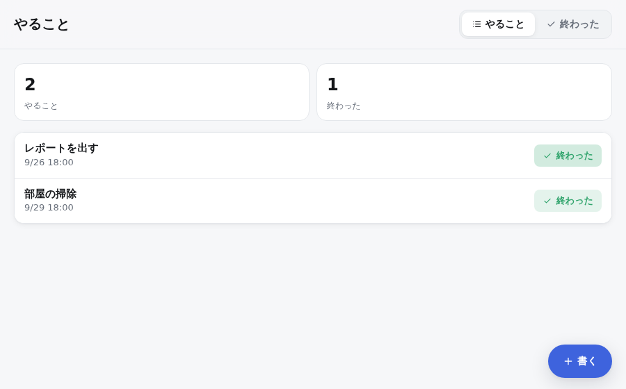

LEARN
入門 — やることアプリを作る
やることアプリを、エラーを見ながら1歩ずつ作ります。できあがりは spec/todo.ponte です。ここに載せたエラーは、python -m ponte check / test を実際に流したときの出力です。
必要なのは Python 3.11 だけです。インストールする前に試したいときは、ホームページの「試す」を使うと、ブラウザの中で書いて確かめられます。
「試す」ページや、ponte lsp を使うエディタでは、rule や action などの見出しを書いて Enter を押すと、その見出しに必須の部品の名前（when、do など）だけが入ります。中身は自分で埋めます。Tab で次の部品へ移れます。
1. データの形を書く
thing Task title text due monthday owner User gone[remove too] status [todo | done] thing User name text flow Task.status todo -> done -> todo
thingはデータの形です。status [todo | done]は「この2つのどれか」という状態です。owner Userは、別の thing である User を指す項目です。gone[remove too]は「User が消えたら、この Task も消す」という意味です。flowは状態の流れです。状態は矢印のとおりにしか移りません。
チェックしてみます。
$ python -m ponte check todo.ponte Stopped: 2 error(s) todo.ponte:1 E19 thing Task: no who lines saying who can do what. Nobody can do anything that is not written todo.ponte:7 E19 thing User: no who lines saying who can do what. Nobody can do anything that is not written (how to fix: ponte explain E19)
書いていないことは、誰にもできません。 そのため「誰が何をできるか」を決めないと、先へ進めません。
2. 誰が何をできるかを書く
who user can see Task where owner is me user can change Task where owner is me user can see User where it is me
これで、自分のやることだけが見え、自分のものだけを変えられます。消せるようにするなら user can remove Task where owner is me も足します。
3. ボタンを押したら終わりにする
rule Finish when user taps done-button on Task do move this to finished
$ python -m ponte check todo.ponte Stopped: 1 error(s) todo.ponte:20 E32 rule Finish: Task has no state named "finished" (todo / done) (how to fix: ponte explain E32)
打ち間違いは、動かす前にエラーになります。done に直すと通ります。エラーの意味がわからないときは、python -m ponte explain E32 を実行すると、止めた理由と直し方が表示されます。
$ python -m ponte check todo.ponte
Nothing is undecided. Ready to run
4. 確かめる（example）
check が通っても、本当にそう動くかはまだ確かめていません。test を流すと、確かめていない部分（穴）が表示されます。
$ python -m ponte test todo.ponte
0 examples, 0 passed
Untested parts (not covered by any example: 3)
todo.ponte:18 rule Finish: has when but no example
todo.ponte:10 flow Task.status: no example covers todo -> done
todo.ponte:10 flow Task.status: no example covers done -> todo
これはエラーではありません。example がなくても ponte check は通り、アプリも動きます。ponte test は、まだ example で確かめていない部分を一覧にしているだけです（--strict を付けたときだけ、1件でも残ると失敗になります）。ただし action だけは、AI が書いた中身を確かめるために example が2つ以上必要です。
example を書きます。「前の状態」「出来事」「期待する結果」の順に書きます。
rule Finish why 終わったら消えてほしい when user taps done-button on Task where status is todo do move this to done example given Task title "牛乳を買う" status todo taps done-button on Task title "牛乳を買う" expect Task is done title "牛乳を買う"
where status is todo は「まだのときだけ」という意味です。条件に合わないとき、この rule は何もせずに終わり、ボタンも押せなくなります。
done -> todo の穴は、「戻す」ボタンの rule（Reopen）とその example で埋まります。できあがりのファイルで確かめてください。
5. きっかけには出来事だけを書く
「期限が明日なら知らせる」を次のように書くと、エラーになります。
rule Remind when due within 1 days do notify owner "{title} の期限です"
$ python -m ponte check todo.ponte Stopped: 1 error(s) todo.ponte:23 E07 rule Remind: when takes only events. "due within 1 days" is a state, so write it in where (how to fix: ponte explain E07)
「期限が近い」は状態であり、いつ起きるかが決まっていません。そこで、きっかけ（出来事）は「毎朝8時」にし、状態は一覧（list）で絞ります。
list Soon of Task where status is todo where due within 1 days rule Remind why 明日までのものを忘れない when every day at 8:00 do notify owner each of Soon
notify owner each of Soon は「Soon のそれぞれを、その Task の owner に知らせる」という意味です。
6. 画面を作る
scene Home tab[todo | done] = todo top Header top tabs tab main stats Todo, Done main match tab todo -> Todo as list done -> Done as list bottom button add named add-task icon plus input AddTask title required due from now look Todo as list title title sub due button done-button named finish icon check tone good empty todo-empty
sceneは画面、lookは一覧の見せ方、inputは入力です。- 画面に出る文字は
words ja/words enに書きます。書き忘れもエラーになります。日本語だけのアプリなら、words を書かずにnamed "終わった"のように直接書いてもかまいません。
動かしてみます。
$ python -m ponte run todo.ponte
動いています: http://127.0.0.1:8000/

7. 人に使ってもらう
公開する前に、次の3つを確かめます。
$ python -m ponte check todo.ponte --publish # 公開する時の検査（読み上げ対応も） $ python -m ponte test todo.ponte --strict # 穴が1つでもあれば失敗 $ python -m ponte build todo.ponte # 1つのファイルに → python todo.pyz
仕様を、コードを読まない人に見てもらうこともできます。ponte doc は、データ、流れ、権限、ルールとその理由、残っていることを1枚のページにまとめます。
$ python -m ponte doc todo.ponte # → todo.html
ほかの人にも使ってもらうときは、ログインを付けて動かします。--login を付けずに外に開こうとすると、Ponte はエラーを出して起動しません。
$ python -m ponte user add todo.ponte taro # 合言葉を聞かれます $ python -m ponte run todo.ponte --login --host 0.0.0.0
次に読むもの
- AI に中身を書かせる（action）: 仕様書 5章の action と、spec/hub_app.ponte の ExtractDeadline
- 標準ライブラリ: spec/kakeibo.ponte（
use std/moneyで金額を拾います） - 役割と2つの thing: spec/lend.ponte
- 言語のすべて: 仕様書 v0.3
- 書き方の一覧:
python -m ponte guide --rules（rule）/python -m ponte guide（action の中身）